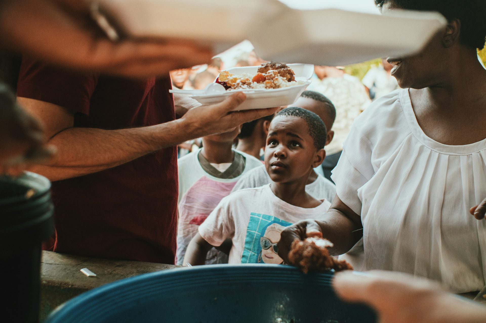
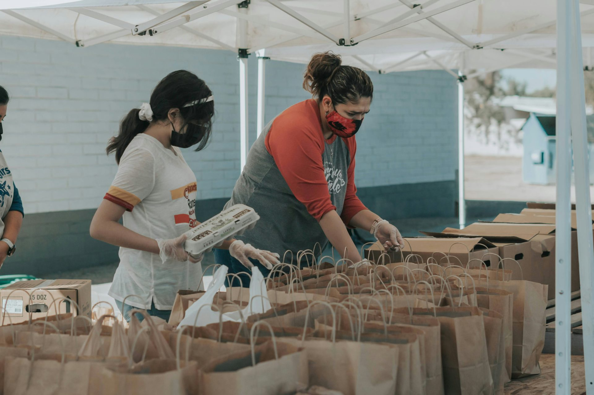

01 / Essentials
Food drives
Bring essential groceries together to help households navigate difficult seasons with more security.
Explore food drivesA community-first foundation concept
When communities come together, practical kindness can help people feel seen, supported and valued.
Rooted in dignity. Driven by compassion.

Why we exist
Hands of Hope is a fictional non-profit foundation concept created around one simple belief: nobody should have to face hardship alone.
The project explores how a clear, welcoming website can connect people who want to help with practical ways to contribute — through food drives, clothing donations and community outreach.
Meet the missionPractical support
01 / Essentials
Bring essential groceries together to help households navigate difficult seasons with more security.
Explore food drives02 / Everyday care
Give clean, gently used clothing a new purpose by helping meet a practical everyday need.
Explore clothing support03 / Connection
Make space for neighbours, volunteers and community groups to connect and offer support.
Explore outreach
A place for everyone
Whether you have time, useful items, skills or a community idea, there is a meaningful starting point for you.
Hope is something we do together
Explore the project, discover the proposed programmes or send a demonstration enquiry.